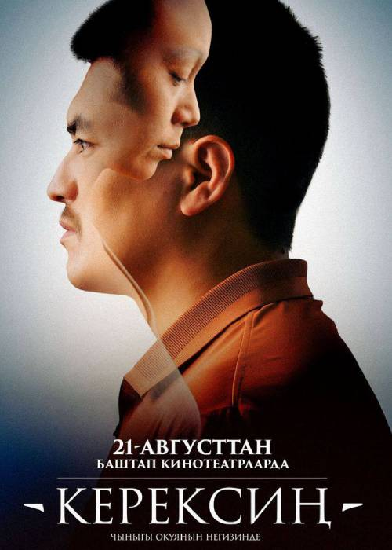

Керексин (2025)
Жанр:Комедия,Мелодрама
Режиссёр: Караш Жанышов
В ролях: Саламат Калыбек Уулу, Темирлан Сманбеков, Арнис Кыдырмышев
Описание:Адилет и Айжан — самая обычная молодая семья. Однажды у Айжан диагностировали четвертую стадию онкологии. Врачи сообщают, что ей остается жить совсем недолго. Мужу приходится взять на себя заботу не только о полуторагодовалой дочке Назик и шестилетней Инае, а взять на себя роль обоих родителей. Несмотря на тяжёлый диагноз, Адилет твёрдо решает сделать всё, чтобы спасти жену и вылечить её от тяжёлой болезни.
Продолжительность: 1ч 10 мин
Забронировать билет